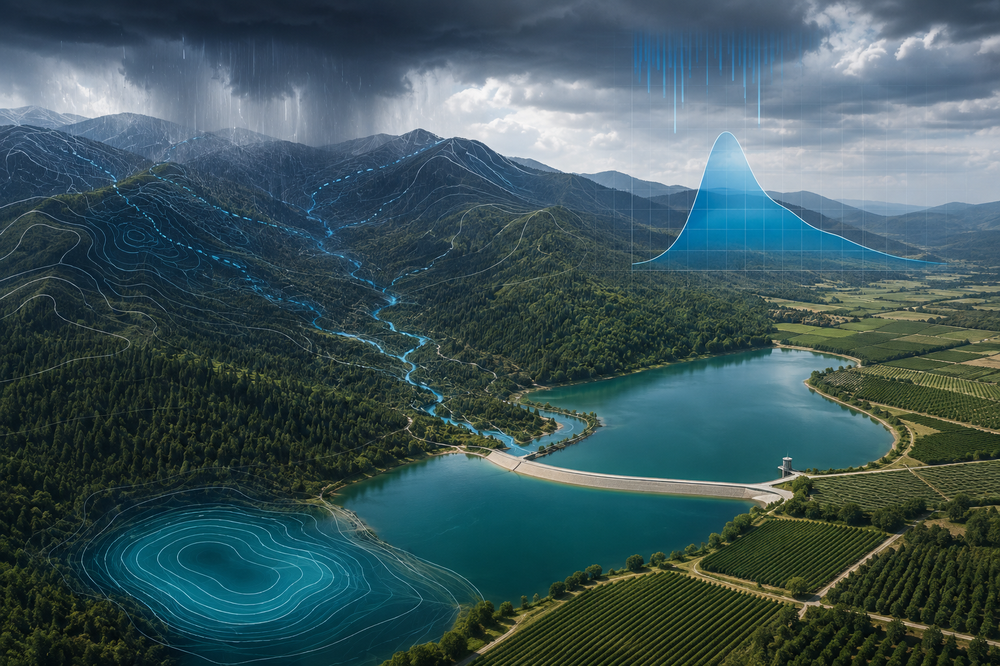
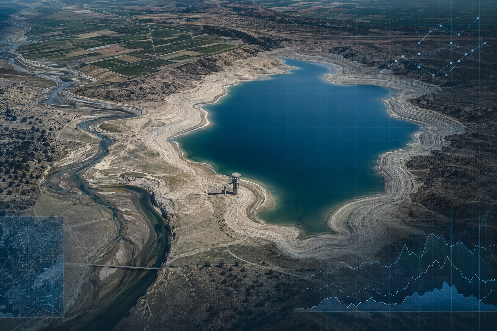

OBSERVE
JEONBUK NATIONAL UNIVERSITY · AGRICULTURAL HYDROLOGY
Read the flow.
Design the future.
기후와 토지이용 변화 속 물의 흐름을 읽고,
지속가능한 농업과 유역관리의 미래를 설계합니다.

01
ABOUT THE LAB
OUR PURPOSE
변화하는 물환경을 읽고,
더 나은 적응을 설계합니다.
농업수문학연구실은 기후변화와 토지이용 변화에 따른 수문학적 영향을 평가하고, 지속가능한 유역관리 체계와 수자원 통합 시스템을 구축하는 것을 목표로 합니다.
물리 기반 수문모형과 AI·위성자료를 결합해 기존 모델의 한계를 보완하고, 환경 개선과 농촌 발전에 활용할 수 있는 실용적인 해법을 개발합니다.
MODEL
모델링
물리 과정과 데이터 패턴을 연결해 시스템을 재현합니다.PREDICT
예측
가뭄과 수문환경 변화를 정량적으로 전망합니다.ADAPT
적응
지속가능한 농업과 유역관리 전략을 제안합니다.02
RESEARCH AREAS
FROM DATA TO DECISIONS
연구의 모든 단계가
하나의 흐름으로 이어집니다.
관측자료에서 의미 있는 패턴을 찾고, 모델을 통해 미래를 예측하며, 현장에 적용 가능한 대응 전략으로 연결합니다.
01
Hydrology & Environmental Modeling
수문 및 환경모델링
수문 순환과 환경 변화를 물리 기반 모형과 데이터 기반 기법으로 해석합니다.02
Climate & Land-use Change
기후·토지이용 변화 영향
기후와 토지이용 변화가 유출·토양수분 등 수문 과정에 미치는 영향을 분석합니다.03
Soil Erosion & Sediment
농업 토양침식 및 유사이송
농업활동에 따른 토양침식과 유사 생산·이송 과정을 정량적으로 해석합니다.
03
PRINCIPAL INVESTIGATOR
PRINCIPAL INVESTIGATOR
이상현 교수
Sanghyun Lee, Ph.D.
데이터와 물리 기반 접근을 연결하여 기후·토지이용 변화가 수문환경에 미치는 영향을 밝히고, 농업과 유역을 위한 지속가능한 해결책을 연구합니다.
- RESEARCH FIELD
- 수문 및 환경모델링
- COURSES
- 수문학 · 농업통계학 · 지역컴퓨터프로그래밍
- OFFICE
- 농업생명과학대학 본관 224호
EDUCATIONUniversity of Illinois at Urbana-Champaign박사 · 석사
단국대학교 토목환경공학과 학사
단국대학교 토목환경공학과 학사
EXPERIENCE전북대학교 지역건설공학과 교수2025.03 – 현재
USDA-ARS 박사후연구원 · 2023–2025
USDA-ARS 박사후연구원 · 2023–2025
RESEARCH EXPERTISE
수문 및 환경모델링기후·토지이용 변화토양침식 및 유사이송AI·위성 기반 재해예측
04
CURRENT PROJECTS
RESEARCH IN ACTION
현장의 문제를
연구의 언어로 풉니다.
가뭄 예경보부터 댐 운영, 농업용수와 탄소흡수기술까지 실제 수자원 문제를 해결하기 위한 연구를 수행합니다.
한국연구재단 · 신진연구
저수지 가뭄 반응 유형화 및 수문 연쇄 반응 규명을 통한 지식주입형 AI 기반 예경보 시스템 개발
한국환경산업기술원
홍수 피해 저감을 위한 댐 동적 운영 기술 개발
한국환경산업기술원
토양기반 탄소흡수기술 통합영향평가 모델 개발
한국농어촌공사
농업용수 수요·공급량 실태조사 용역 — 낙동강·영섬권역
농림식품기술기획평가원
저수지 홍수범람 예측 및 D.N.A. 기반 최적 스마트 운영관리 플랫폼 개발
05
SELECTED PUBLICATIONS
RECENT PAPERS
연구 결과를
지식으로 연결합니다.
202601
Environmental Modelling & Software · 198, 106899
Advancing Water Level Prediction Using Clustering-based Machine Learning Techniques in Data-Scarce Regions
Lee, S. & Jang, T.DOI ↗202502
Water Resources Research · 61(11), e2024WR039744
Large-scale drought forecasting in the U.S. Southern Plains through a hybrid cluster-based Wavelet-Machine learning approach
Lee, S., Danandeh Mehr, A., Moriasi, D. & Mirchi, A.202503
Scientific Reports · 15, 15135
Increasing frequency and spatial extent of cattle heat stress conditions in the Southern Plains of the USA
Lee, S., Moriasi, D., Cibils, A. & Barker, P.DOI ↗202504
Journal of Environmental Quality · 54(1), 147–159
Modeling the impacts of measured and projected climate and management systems on agricultural fields
Lee, S. et al.DOI ↗202405
Journal of Hydrometeorology · 25(12), 1809–1822
Wavelet-entropy enhanced clustering: A comprehensive analysis of drought patterns in the Southern Plains, USA
Lee, S., Nourani, V., Danandeh Mehr, A., Moriasi, D. & Mirchi, A.DOI ↗202406
Journal of Hydrology: Regional Studies · 53, 101761
Sensitivity of SPEI to the choice of probability distribution and evapotranspiration method
Lee, S., Moriasi, D., Danandeh Mehr, A. & Mirchi, A.DOI ↗06
LAB MEMBERS
PEOPLE BEHIND THE RESEARCH
다른 관점이 만나
더 나은 답을 만듭니다.
서로 다른 관점과 기술을 연결해 물환경의 변화를 이해하고, 현장에 필요한 답을 함께 찾아갑니다.
01LJ
M.S. STUDENT
이정
석사02KY
UNDERGRADUATE RESEARCHER
김대영
학부연구생03BE
UNDERGRADUATE RESEARCHER
백의찬
학부연구생04HJ
UNDERGRADUATE RESEARCHER
하재진
학부연구생LET'S CONNECT THROUGH WATER
함께 연구할
새로운 흐름을 찾습니다.
연구 협력, 대학원 진학, 학부연구생 참여에 관해 편하게 문의해 주세요.